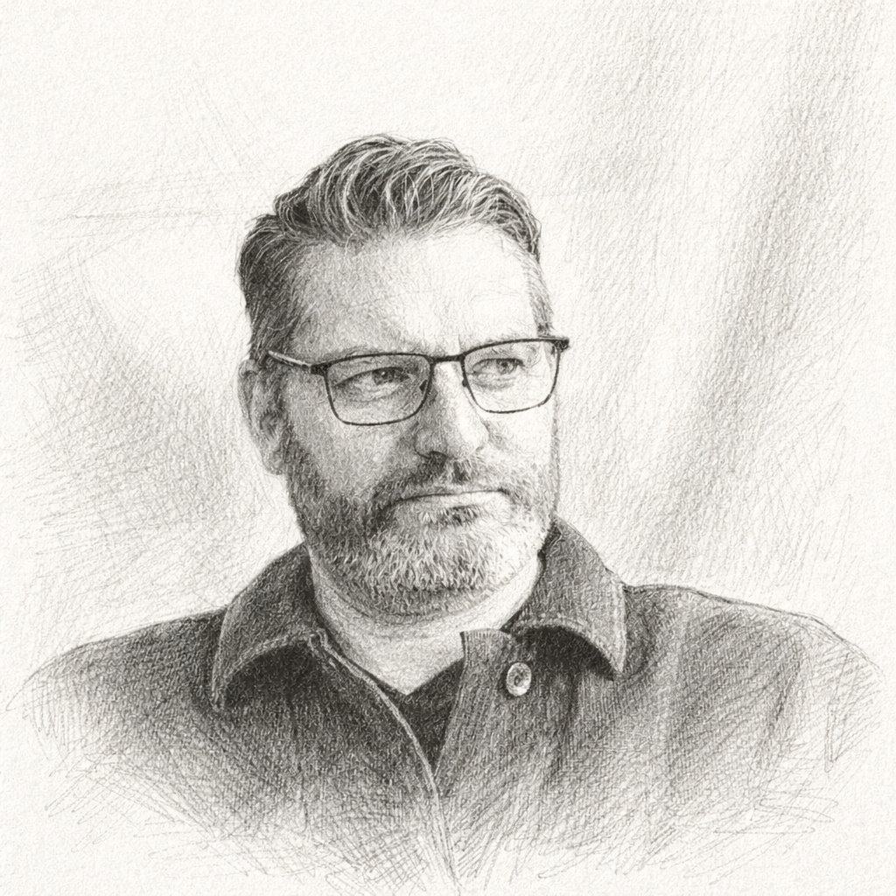
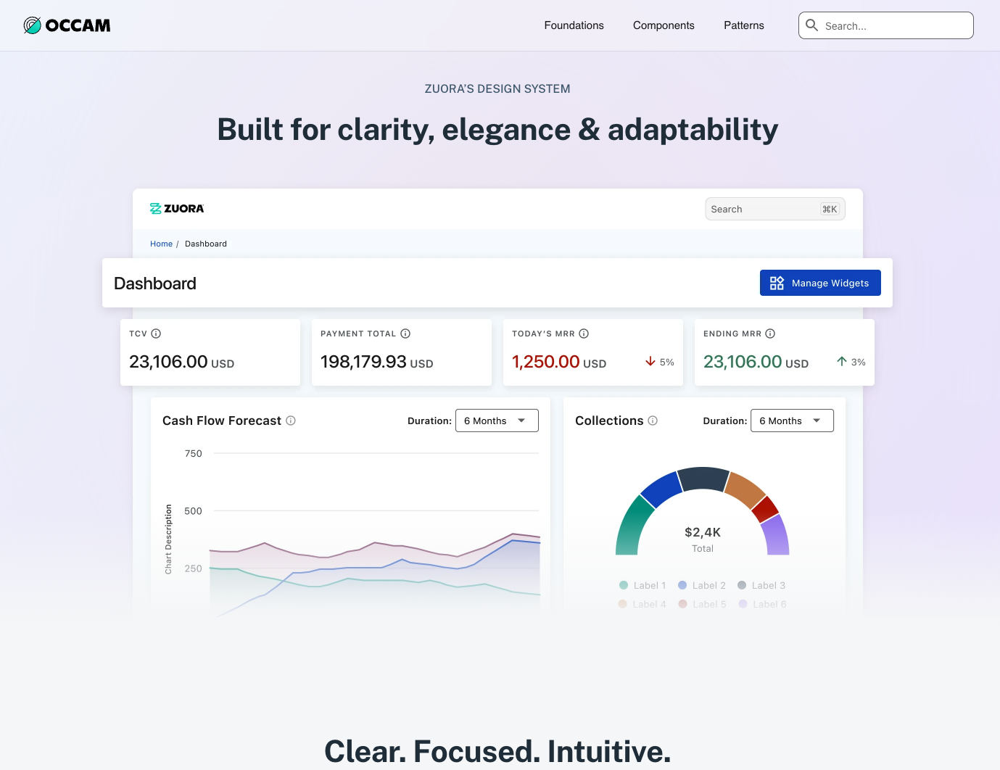
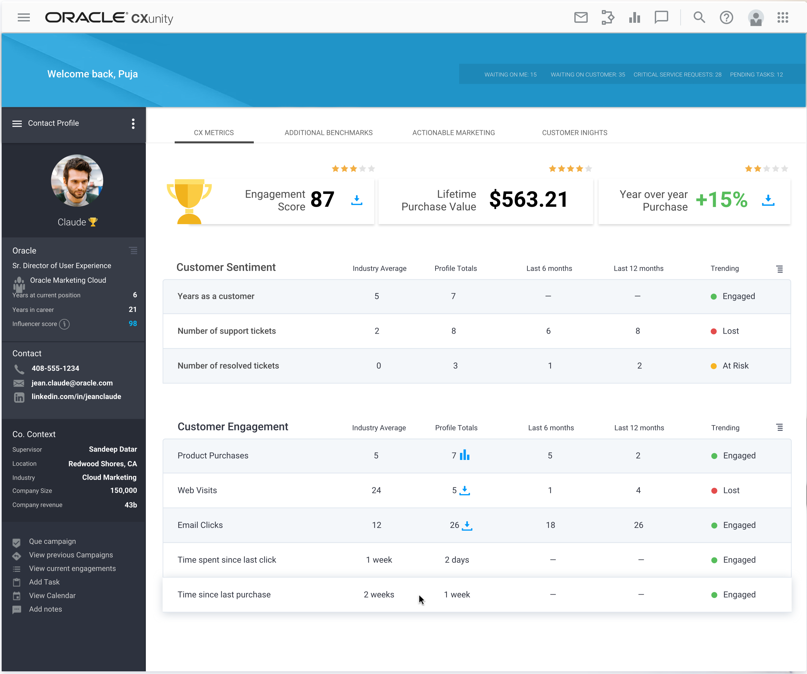
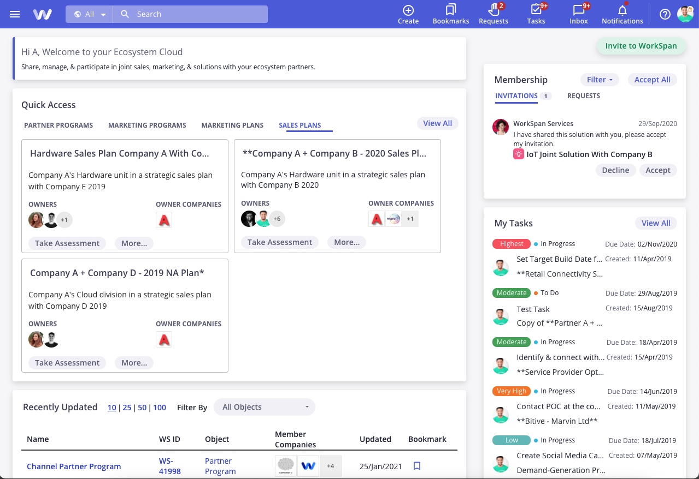

VP of Design · User Experience Executive

I build design-first cultures that turn complex products into competitive advantages.
For 25 years I've helped companies see design not as a layer applied at the end of the process, but as a strategic driver of customer acquisition, retention, and growth.
About
I set out to fix broken products.
Early in my career I noticed a pattern: the most frustrating software wasn't poorly engineered. It was well-engineered but poorly understood by the people who built it. Features were designed for the roadmap, not the user. And design was treated as something you applied at the end, like paint.
Fixing that problem turned out to require more than design skills. It required changing how organizations think.
That's been my work ever since. At Responsys I rebuilt a UX practice from scratch, turning design into a competitive differentiator that Oracle noticed. At WorkSpan I unified a fragmented product experience and built the design system that gave the platform a foundation to grow on. At Zuora I joined as the first Head of Design in company history, inherited a team of two, and spent four years building a 14-person global organization and a culture where product and engineering treat design as a partner from day one.
My approach has always been wholistic. I don't separate the craft from the strategy, the team from the work, or the user experience from the business outcome.
I'm looking for my next challenge. If you're building something complex and believe design can be a genuine competitive advantage, I'd like to talk.
Currently
"Getting ahead of the AI shift rather than waiting for it to land — building agentic design tooling, getting my team coding, and developing a point of view on what the discipline looks like in five years."
Teaching
"Product and UX design at a Bay Area college — rethinking the curriculum for the AI era."
Writing
"Design strategy, leadership, and the real work of building for AI — minus the hype."
Selected Work
Each project is a leadership story as much as a design story — strategy, organization, and craft in equal measure.

Joined as Zuora's first Head of Design. Inherited two designers, an engineering-first culture, and a fragmented product suite. Built a 14-person global team, launched the Occam Design System, and drove a 30% NPS improvement — all while pioneering agentic design tooling for the AI era.

Led 18 designers across 4 countries following Oracle's acquisition of Responsys. Turned five competing design languages into a unified suite — reversing a product reputation from top churn driver to top purchase reason — by solving organizational problems with organizational solutions.

Unified a product built from three inconsistent development eras into a coherent platform. Led user research with 25 participants across 8 customers, built a design system Engineering actually wanted, and improved task completion time by 25–30% — guided by the principle of "Fresh yet Familiar."
How I Lead
Design leadership is an organizational challenge as much as a creative one. A design team can have exceptional talent and still produce nothing of consequence if the conditions around it aren't right.
When I join a new organization, my first instinct is never to impose. It's to understand. I find the quick win that demonstrates what design-led thinking can produce, and use that credibility to open the door to harder, deeper work. You can't mandate a design-first culture. You have to build toward it from shared recognition.
Some of the most important design decisions I've made had nothing to do with pixels. Design strategy and people strategy are the same thing. If you're only thinking about the work and not the organization around it, you're solving half the problem.
I've led teams of 18 designers across four countries, and teams of four where I was designing alongside everyone else. In both modes, I've stayed as close to the work as the role allows. Staying close to the craft makes you a better critic, a better mentor, and a more credible voice in rooms full of engineers looking for any reason to discount design judgment.
A designer with great taste but no voice gets rolled in the real world of competing roadmap priorities. I look for people who translate complex requirements into real design decisions, stay invested in outcomes not just deliverables, and can articulate design decisions clearly under pressure.
The role of the product designer is changing faster right now than at any point in my career. AI coding tools are blurring the line between design and engineering. My answer is that design owns more than we think, if we move toward it rather than away from it. I've been building agentic design tooling, getting my team coding with Cursor and Claude Code, and working toward a world where product designers submit pull requests — not redlines. The handoff problem doesn't get solved by better documentation. It gets solved by collapsing the distance between the two disciplines entirely.
Writing
Writing about design strategy, leadership, and the real work of building for AI — minus the hype.
Subscribe on Substack →Let's Talk
If you're building something complex and believe design can be a genuine competitive advantage, I'd like to hear about it.